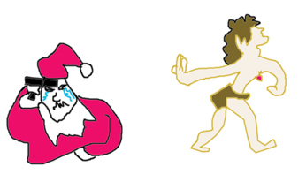

| SAN, ZAN |
|
SANta claus's heart admits defeat when tarZAN breaks up with him (for good this time). He feels wretched!  |
| みじ*め ( な ) |
pathetic. Unlike the related term 哀れ(あわれ), 惨め is a pretty un-sympathetic word you use for some poor schmuck who is in a wretched state but, you know, you couldn’t imagine them ever being happy anyway.
★☆☆☆☆ |
| 惨事 |
tragedy
★☆☆☆☆
a tragedy (BOOBOO: not as in a sad play, but as in someone's sister died while giving birth. A dramatic tragedy is 悲劇 （ひげき） ) |
| 悲惨 な |
terrible
☆☆☆☆☆
terrible, harrowing, tragic. Usually used not about a single person’s misfortune but like the tragic cost of war, the terrible catastrophe that befell the small town in Godzilla’s path, etc. |
| Meaning | Hint | Radical | |
|---|---|---|---|
| 修 | master a skill | PERSON | 人 |
| 参 | admit defeat / visit | MOOCOW | ム |
| 惨 | wretched | HEART | 心 |
The PERSON is a master at making shoes,
but the MOOCOW defeats you.
The wretched HEART is singing the blues.
|
pathos, misery, pitifulness
かわいいそうな 哀れな 惨めな 哀愁 心細い 悲惨な |
 KANJIDAMAGE
KANJIDAMAGE